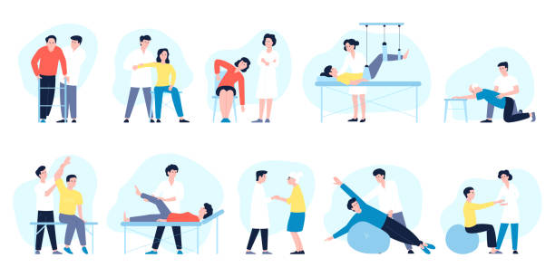

Porque queremos verte en movimiento.
Ofrecemos una variedad de servicios de fisioterapia para mejorar tu bienestar.
Lesiones DeportivasSomos un equipo dedicado de profesionales comprometidos con tu salud.
Estamos comprometidos a tranformar tu dolor en progreso y movimientos. Recupera, renueva y revitaliza tu vida.Contáctanos para programar una cita o hacer preguntas sobre nuestros servicios.